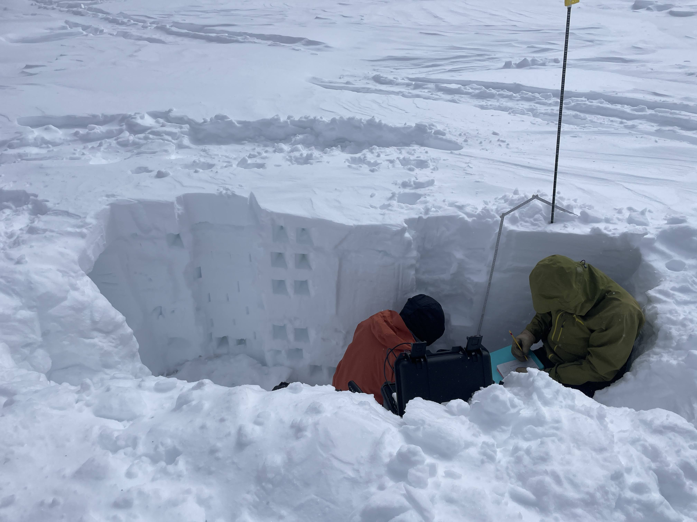
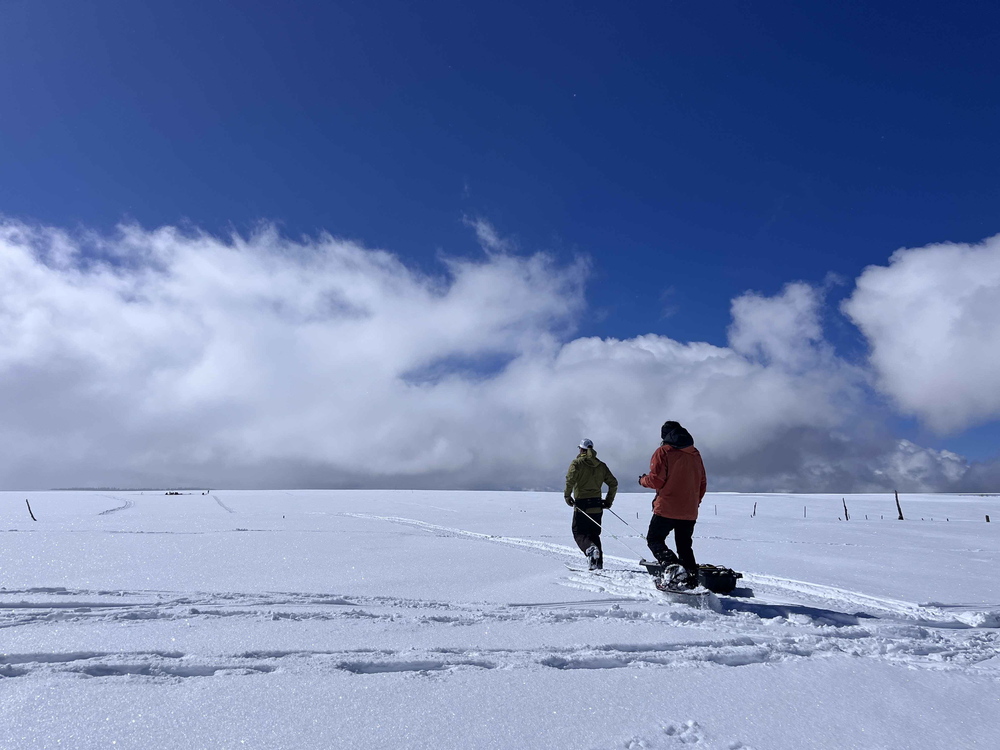
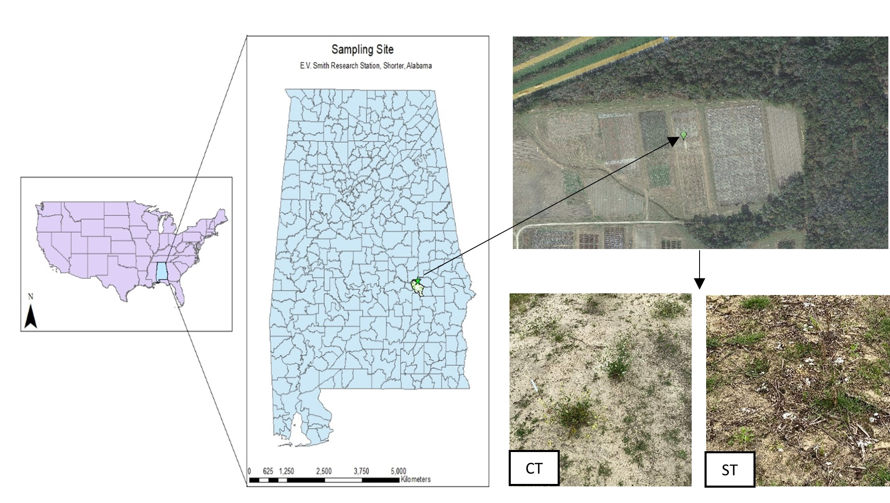
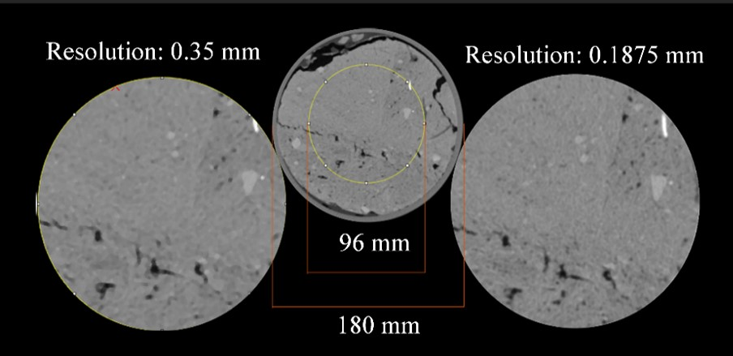

PhD Research

Understanding snowpack dynamics in Jemez mountains of NM using SnowModel
We are using SnowModel to model liquid water content and relate it to coherence derived from UAVSAR flights from the 2020 SnowEx Campaign.

L-Band InSAR global feasibility map for SWE retrieval
We are trying to create a global dataset for SWE retrievals using L-Band InSAR.
Masters Research

Cover crop effects on X-ray computed tomography–derived soil pore characteristics
This study aimed to compare the effects of cover crops (CC) and no cover crops (NC) on soil macropore characteristics in strip-tillage cotton fields. Using high-resolution X-ray CT scanning, the results showed that cover crops increased soil porosity and pore number density in the topsoil. Additionally, deeper subsurface layers under CC had higher connection probability, indicating potential influence on subsurface flow pathways. These findings suggest that cover crop roots play a significant role in shaping soil pore structures, which can impact water and contaminant transport. Link to the published article

Characterization of soil pores in strip-tilled and conventionally-tilled soil using X-ray computed tomography
This study investigated the effects of conventional tillage (CT) vs. strip tillage (ST) on soil pore characteristics across two seasons. Soil cores collected from cotton fields were analyzed using X-ray computed tomography. The results showed that ST had significantly higher macroporosity, network density, and pore connectivity compared to CT in the first season, likely due to less soil disturbance. However, in both tillage systems, pore properties decreased significantly in the second season due to soil reconsolidation from rainfall. The findings highlight how tillage practices and seasonal changes influence soil pore morphology and its potential impact on contaminant transport. Link to the published article

Effect of Image Resolution and Soil Core Size on Soil Pore Characteristics
This study aimed to compare the effects of CT scanning resolution and soil core size on detected soil pore properties. Cylindrical soil cores of different diameters (76 mm and 150 mm) were collected from a cotton field under conventional and strip tillage in two seasons. Results showed that higher resolution scanning revealed more isolated pores with greater anisotropy, while smaller core diameters detected fewer pores but had greater pore connectivity. Significant differences were observed mainly in conventional tillage cores from season 2. The findings highlight the tradeoff between resolution, field of view, and core size, emphasizing the importance of aligning sampling methods with research objectives.